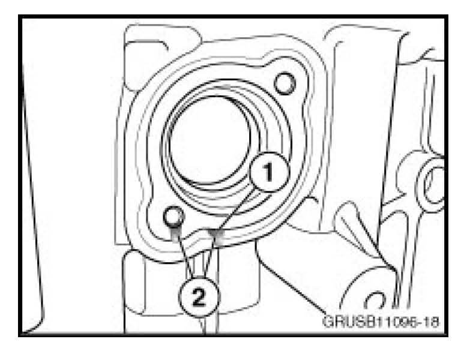

Engine - Oil Leak R/H Side Of Engine Crankcase
SI B 11 08 09Engine
September 2009
Technical Service
SUBJECT
Engine Oil Leak
MODEL
All E82, E83, E88, E85, E86, E60, E61, E70, E90, E91, E92 and E93
vehicles with N51, N52 or N52K engines
SITUATION
An engine oil leak can be seen coming from the right side of the engine crankcase near the coolant port. Removing the coolant pipe shows that the oil leak can be evident from the separation of the two crankcase materials (aluminum and magnesium) or one of the coolant pipe attachment bolt holes.

Separation (1) between aluminium and magnesium portion of the engine crankcase. Engine oil leaking from separation or bolt hole (2).
CAUSE
The cause is a very small leak at the main oil galley between the aluminum and the magnesium portion of the engine crankcase.
PROCEDURE
Do not attempt to reseal. Resealing may cause engine oil leakage to enter the cooling system resulting in contamination and further damage to the cooling system components. The engine crankcase will need to be replaced. This replacement requires a TeileClearing PuMA case.
WARRANTY INFORMATION
Information only